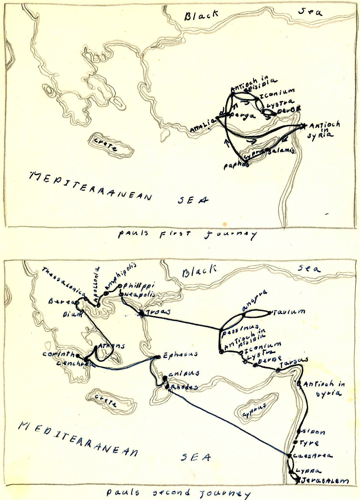
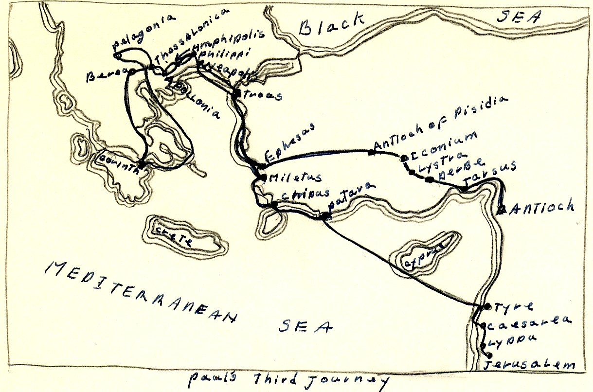

THE WORLDS GREATEST MISSIONARY
BY ELEANOR KELLY, Oct 1960
Texas Christian University
OUTLINE
I. EARLY LIFE
III. FIRST MISSIONARY JOURNEY
III. BETWEEN FIRST AND SECOND JOURNEM
IV. SECOND JOURNEY
V. THIRD JOURNEY
VI. IMPRISONMENTS
EARLY LIFE
Paul, probably the greatest missionary in the history of the church, was born in the Cilician city of Tarsus of Pharisee parentage and was, therefore trained as a pharisee in the local synagogue/ He grew up learning the trade of tent maker, which he fell back on many times during his ministry as a means of making a living when he stayed for long periods of time in a city.
For a long time he persecuted the Christians and, in 35A.D., on a Journey to Damascus to persecute some Christians, he beheld a vision of the exalted Jesus, who called him to His personal service.
After his conversion he went first to Arabia where he stayed for about 3 years to think out what had happened to him and to be instructed in what he was to do. When three years had passed he made his first trip to Jerusalem where he met Peter and James the less For ten years after this he worked in Syria and Cilica in danger, suffering, and bodily weakness, using Tarsus, his home town as headquarters where he still worked as a tentmaker.
After 13 years of staying in the background he launched up- on the most fruitful evangelistic endeavor in the history of the church. This endeavor consisted of three trips which covered almost all the then known worked. This is His story.
James[i] the less was supposed to be the brother of Christ, He was elected as overseer of the Jerusalem church and wrote Epistles ascribed to him, He was killed by stoning when aged 94.
FIRST MISSIONARY JOURNEY
The first of these journeys started from Antioch Syria which was then rapidly becoming the leading center of gentile Christianity. After leaving Antioch Paul and Barnabas[ii] came first to Cyprus where a church was planted. Next they went to Antioch Pisida where they gained many converts, mostly gentile but they were forced to leave because of angry Jews[iii].
After this they travelled to Iconium, Lystra, and Derbe where the story was almost the same, they had to flee from angry Jews in just about every city. After working in Derbe with some success, he returned to Lystra where his work went unhindered.
He then returned to Antioch, Syria after 22 months of labor.[iv]
Summed up this first journey resulted in the establishment of congregations in Galatia now known as Asia Minor.
BETWEEN FIRST AND SECOND JOURNIES
On his return to Antioch, Paul made a test case of the Jews reaction to gentiles by taking with him Titus, and uncircumcised gentile convert, when was a concrete example of monlegalistic Christianity and went with Barnabas to Jerusalem to meet the leaders there privately. When the results of the meeting reached Peter and John, cordial recognition of the genuineness of Paul’s work was given and an agreement that the field should be divided.
This agreement was that the Jerusalem leaders would continue their mission to the Jews with the maintenance of law, and Paul and Barnabas would go with the free message to the gentiles.
The growth of churches in Antioch, Cyprus, and Galatia raised the question of gentile relations to Jewish law on a great scale. The main question was whether the law keeping Jews and law free gentiles should eat together.
This led to a public discussion in Jerusalem in the year This was called the council of Jerusalem and caused the formulation of certain rules governing mixed eating.
Before his second journey, Paul and Barnabas separated bee cause of this dispute on eating and also because of a disagreement about whether Mark[v], Barnabas nephew should go on the second journey because he had turned back to Jerusalem after only going a short way on the first journey.
SECOND JOURNEY
Paul took Silas, a Jerusalem Christian of Roman Citizenship with him on the second journey and on revisiting Galatia[vi] he was joined by Timothy[vii]

Shortly after the beginning of the second journey, Paul saw a vision of a Macedonian calling to him to come to help them. He went and gained many converts there at Philippi where the gospel first entered Europe[viii]. *On a future visit to Philippi, Paul was imprisoned and escaped miraculously by an earthquake, and as a result the jailer and his family was converted[ix]
After his escape at Philippi, he went to Thessalonica, where he converted many gentiles; but had trouble with the Jews. then escaped from Thessalonica and went to Berea, where he Con- verted both Jews and gentiles. When the Thessalonians came to Berea to make trouble, Paul was sent to Athens.[x]
At Athens Paul preached to the cold intellectual philosophers who were only interested in a new idea to toy with and, as a result no church was started there and Paul went away, never to return.
From Athens Paul went to Corinth and there he worked among the Jews and gentiles for one year, 6 months.
From Corinth he went to Ephesus where he established a church, to Caesarea, and then to Jerusalem where he saluted the church. He then returned to Antioch thus ending his second journey.
THIRD JOURNEY
Paul's third missionary journey consisted of revisiting churches in Galatia and Europe for the purpose of establishing the disciples of the churches in the gospel and counteracting the widespread influence of the Judaizers who were trying to wipe out Christianity.
After revisiting these churches, he went to Ephesus where the seed of Christianity was planted in the gentiles but the Jews E couldn't be reasoned with. When he found that the Jews wouldn't listen, he went to the school of Tyrannus* where he preached and lived working at his trade of tentmaker for three years. When Paul left Ephesus, it was the leading center of the Christian world.
After leaving Ephesus he revisited churches in Europe and then sailed to Philippi Macedonia where he was warmly welcomed by the converts there. From Macedonia he went to Greede, where he stayed for 3 months.
He was about to sail for Jerusalem when he found out that the Jews had conspired to take his life so he changed his coarse.
Paul choose seven men as representees of his missionary activity in Asia and Europe. They were chosen to help bear contributions of the gentile churches to the poor saints at Jerusalem.

Bers
Paul and the seven sail for Jerusalem and landed first at Tarsus where he tarried a week. He preached late into the x night there because he didn't expect to see them again.
Next he reached Milites and sent for the elders from Ephesus because he was concerned over the welfare of the church there. He talked with them for a long time and when he left he was very sad for he for he felt it was his last meeting with them.
After meeting with the elders, he went to Tyree where the con- verts tried to make him change his mind about going to Jerusalem but failed.
After leaving Tyree he went to Caesarea where he stayed for six days before leaving for Jerusalem. Upon reaching Jerusalem his third journey ended. Upon the completion of his third journey, Paul had spent twelve years preaching over Europe and Asia.
IMPRISONMENTS
Paul was captured at Jerusalem and taken to Caesarea, where he was a prisoner for two years (58-60 A.D.) in the governors palace with visiting privileges.
In 60 A.D. he was taken to Rome where he was a prisoner for 2 years. There he wrote most of the epistles that are known.
He was acquitted in 63 E.D. and went to Spain but didn't stay long. He went back to Greece and Galatia where he remained for two years (65-67 A.D.) until he was arrested and taken back to Rome in 67 A.D.
He was executed almost immediately upon his arrival in Rome, under the Neronian persecution by being beheaded.
Bibliography
- Forbush, William B(Ed). I op Book of Martyrs. Philadelphia & Chicago! The John C. Winstons Company, 1926, 370 pp.
- Halley, Henry H. Bible Handbook. Chicago: Henry H Halley, 1957 956 pp.
- Luke, an apostle. I he acts of the Apostle, Antioch, Syria: 90 A.D. 90pp.
- Taylor, C. C. Paul, His Life and reaching. Cincinnate: The standard publishing company, 1943, 125 pop.
- Walker, Williston, A History of The Christian Church. New York: Charles Scribners Sons, 1945 624 pp.
Endnotes
- Acts 13: 1-4 ↩
- Jew from Cyprus when travelled with Paul on the first missionary journey; Martyred in 73 A.D. ↩
- Acts 13: 5-12 ↩
- Acts 14: 25, 15:2 ↩
- Mark was a young Jew converted to Christianity by Peter who he served as scribe, he wrote his gospel under Peters guidance. ↩
- Acts 15: 36, 16: 5 ↩
- Timothy--a native of Lystra, and a gentile convert ↩
- Acts 16: 6-15 ↩
- Acts 16:6x 16-40 ↩
- Acts 17: 1-5 ↩